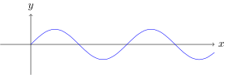
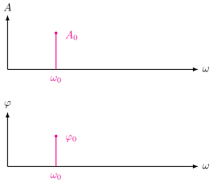
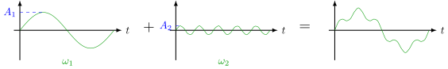
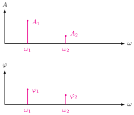
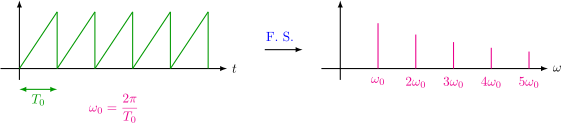
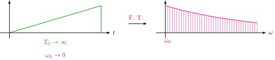
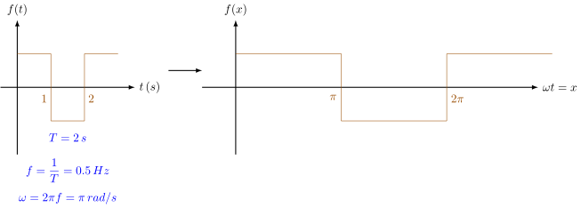
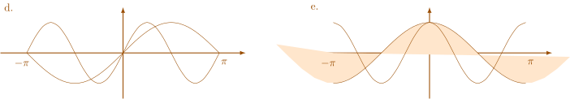
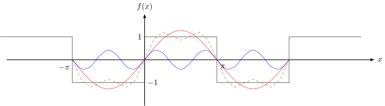

2 Fourier Transform
2.1 Frequency domain
- The convolution in time domain is the multiplication in frequency domain:
- More convenient.
E.g. sine wave
Time domain:

Frequency domain:

- More direct.
Time domain:

Frequency domain:

Fourier Series: Every periodic function can be represented by a series of (co)sines.


Why decompose into sinusoids?
2.2 Fourier Series
2.2.1 Overview
Every periodic function can be represented by a series of (co)sines.

\[\begin{align*} f(x) &= a_0 \cdot \cos(0x) + a_1 \cdot \cos(1\omega x) + a_2 \cdot \cos(2\omega x) + \cdots \\ &+ b_0 \cdot \sin(0x) + b_1 \cdot \sin(1\omega x) + b_2 \cdot \sin(2\omega x) + \cdots \\ &= a_0 + \sum_{n=1}^{\infty} \left( a_n \cdot \cos(nx) + b_n \cdot \sin(nx) \right) \end{align*}\]
To find \(\begin{cases}a_0,\,a_1,\,a_2, \dots \\ b_0,\,b_1,\,b_2, \dots \end{cases}\)
Orthogonal functions:
If \(\displaystyle\int_a^b g(x) \cdot f(x) \,dx = 0\), then \(f(x)\) and \(g(x)\) are orthogonal on \([a, b]\).
Orthogonal collection of (co)sines:
\[\{ \cancel{0=\sin 0x},\, 1=\cos 0x,\, \sin x,\, \cos x,\, \sin 2x,\, \cos 2x,\, \sin 3x,\, \cos 3x,\, \dots \}\]
- Every 2 different functions are orthogonal.
- Every 2 same functions are unorthogonal.
- \(\displaystyle\int_{-\pi}^{\pi} \sin nx \cdot \cos nx \,dx = 0\).
- \(\displaystyle\int_{-\pi}^{\pi} \sin nx \cdot \sin mx \,dx = 0,\, n \ne m\).
- \(\displaystyle\int_{-\pi}^{\pi} \cos nx \cdot \cos mx \,dx = 0,\, n \ne m\).
- \(\displaystyle\int_{-\pi}^{\pi} 1 \cdot \sin nx \,dx = 0\).
- \(\displaystyle\int_{-\pi}^{\pi} 1 \cdot \cos nx \,dx = 0\).

a.
\[\begin{align*} &\, \int_{-\pi}^{\pi} \sin nx \cdot \cos mx \,dx \\ =&\, \int_{-\pi}^{\pi} \frac{1}{2}\left[\sin(nx + mx) + \sin(nx - mx)\right] \,dx \\ =&\, \frac{1}{2} \int_{-\pi}^{\pi} \sin(n + m)x + \sin(n - m)x \,dx \\ =&\, 0 \end{align*}\]
\[\begin{align*} &\, \int_{-\pi}^{\pi} \sin nx \cdot \sin mx \,dx \\ =&\, \int_{-\pi}^{\pi} \frac{1}{2}\left[\cos(nx - mx) - \cos(nx + mx)\right] \,dx \\ =&\, \frac{1}{2} \int_{-\pi}^{\pi} \cos(n - m)x - \cos(n + m)x \,dx \\ =&\, \begin{cases} 0, & n \ne m \\ \pi, & n = m \end{cases} \end{align*}\]
\[\begin{align*} &\, \int_{-\pi}^{\pi} \cos nx \cdot \cos mx \,dx \\ =&\, \int_{-\pi}^{\pi} \frac{1}{2}\left[\cos(nx + mx) + \cos(nx - mx)\right] \,dx \\ =&\, \frac{1}{2} \int_{-\pi}^{\pi} \cos(n + m)x + \cos(n - m)x \,dx \\ =&\, \begin{cases} 0, & n \ne m \\ \pi, & n = m \end{cases} \end{align*}\]
2.2.2 Finding Fourier coefficients
\[ f(x) = a_0 + \sum_{n=1}^{\infty} \left( a_n \cdot \cos(nx) + b_n \cdot \sin(nx) \right) \]
To find \(a_2\):
\[\begin{align*} &\, \int_{-\pi}^{\pi} f(x) \cdot \cos 2x \,dx \\ =&\, \int_{-\pi}^{\pi} \left(a_0 + a_1 \cdot \cos x + a_2 \cdot \cos 2x + \cdots\right. \\ &\, \quad\quad\, \left.b_1 \cdot \sin x + b_2 \cdot \sin 2x + \cdots\right) \cdot \cos 2x \,dx \\ =&\, \int_{-\pi}^{\pi} \big( a_0 \cdot \cancelto{0}{\cos 2x} + a_1 \cdot \cancelto{0}{\cos x \cdot \cos 2x} + \boxed{a_2 \cdot \cos^2 2x} + \cdots \\ &+ b_1 \cdot \cancelto{0}{\sin x \cdot \cos 2x} + b_2 \cdot \cancelto{0}{\sin 2x \cdot \cos 2x} + \cdots \big) \,dx \\ =&\, a_2 \cdot \int_{-\pi}^{\pi} \cos^2 2x \,dx \\ =&\, a_2 \cdot \int_{-\pi}^{\pi} \frac{1 + \cancelto{0}{\cos 4x}}{2} \,dx \\ =&\, \pi \cdot a_2 . \end{align*}\]
\[\begin{equation} a_2 = \frac{1}{\pi} \int_{-\pi}^{\pi} f(x) \cdot \cos 2x \,dx \end{equation}\]
\[\begin{equation} \color{red}{a_n = \frac{1}{\pi} \int_{-\pi}^{\pi} f(x) \cdot \cos nx \,dx} \end{equation}\]
\[\begin{equation} \color{red}{b_n = \frac{1}{\pi} \int_{-\pi}^{\pi} f(x) \cdot \sin nx \,dx} \end{equation}\]
To find \(a_0\): \[\begin{align*} &\, \int_{-\pi}^{\pi} f(x) \cdot 1 \,dx \\ =&\, \int_{-\pi}^{\pi} \left(a_0 + a_1 \cdot \cancelto{0}{\cos x} + a_2 \cdot \cancelto{0}{\cos 2x} + \cdots\right. \\ &\, \quad\quad\, \left.b_1 \cdot \cancelto{0}{\sin x} + b_2 \cdot \cancelto{0}{\sin 2x} + \cdots\right) \cdot 1 \,dx \\ =&\, 2\pi a_0 . \end{align*}\]
\[\begin{equation} \color{red}{a_0 = \frac{1}{2\pi} \int_{-\pi}^{\pi} f(x) \,dx} \end{equation}\]
Alternatively, with
\[\begin{equation} f(x) = \color{blue}{\frac{a_0}{2}} \color{black} + \sum_{n=1}^{\infty} \left( a_n \cdot \cos(nx) + b_n \cdot \sin(nx) \right) , \end{equation}\]
\[\begin{equation} \color{blue}{a_0 = \frac{1}{\pi} \int_{-\pi}^{\pi} f(x) \,dx} \end{equation}\]
E.g. \(f(x) = \begin{cases} 1, & \quad [0, \pi] \\ -1, & \quad [-\pi, 0) \end{cases}\)
\[\begin{equation} f(x) = \underset{\color{red}{0}}{\color{red}\underline{\color{black}a_0}} + \sum_{n=1}^{\infty} \left( \underset{\color{red}{0}}{\color{red}\underline{\color{black}a_n}} \cdot \cos(nx) + b_n \cdot \sin(nx) \right) \end{equation}\]
\[\begin{align*} a_0 &= \frac{1}{2\pi} \int_{-\pi}^{\pi} f(x) \,dx \\ &= \frac{1}{2\pi} \left[ \int_{0}^{\pi} 1 \,dx + \int_{-\pi}^{0} -1 \,dx \right] \\ &= \frac{1}{2\pi} \left[] \pi + (-\pi) \right] \\ &= 0 . \end{align*}\]
\[\begin{align*} a_n &= \frac{1}{\pi} \int_{-\pi}^{\pi} f(x) \cdot \cos nx \,dx \\ &= \frac{1}{\pi} \left[ \int_{0}^{\pi} \cos nx \,dx + \int_{-\pi}^{0} -\cos nx \,dx \right] \\ &= \frac{1}{\pi} \left[ \frac{1}{n}\sin nx \Big|_0^{\pi} + \frac{1}{n}\sin nx \Big|_{-\pi}^{0} \right] \\ &= 0 . \end{align*}\]
\[\begin{align*} b_n &= \frac{1}{\pi} \int_{-\pi}^{\pi} f(x) \cdot \sin nx \,dx \\ &= \frac{1}{\pi} \left[ \int_{0}^{\pi} \sin nx \,dx + \int_{-\pi}^{0} -\sin nx \,dx \right] \\ &= \frac{1}{\pi} \left[ -\frac{1}{n}\cos nx \Big|_0^{\pi} + \frac{1}{n}\cos nx \Big|_{-\pi}^{0} \right] \\ &= \frac{1}{n\pi} \left(-\cos n\pi + \cos 0 + \cos 0 - \cos(-n\pi) \right) \\ &= \frac{2}{n\pi} \left(1 - \cos n\pi\right) \\ &= \begin{cases} \displaystyle\frac{4}{n\pi}, & n = 1,\,3,\,5,\, \dots \\ 0, & n = 0,\,2,\,4,\, \dots \end{cases} \end{align*}\]
\[\begin{equation} \color{red}{f(x) = \frac{4}{\pi} \left( \sin x + \frac{1}{3}\sin 3x + \frac{1}{5}\sin 5x + \frac{1}{7}\sin 7x \cdots \right) = \boxed{\sum_{n=1,3,5,\dots}^{\infty} \frac{4}{n\pi} \cdot \sin nx}} \end{equation}\]

2.3 Fourier Transform
\[\begin{equation} f(x) = \frac{A_0}{2} + \sum_{n=1}^{\infty} A_n \cdot \sin(nx+\varphi_n) \end{equation}\]
Let \(a_n = A_n\sin\varphi_n\), \(b_n = A_n\cos\varphi_n\),
\[\begin{equation} f(x) = \frac{a_0}{2} + \sum_{n=1}^{\infty} \left( a_n \cdot \cos(nx) + b_n \cdot \sin(nx) \right) \end{equation}\]
Euler’s formula:
\[\begin{equation}\color{blue} \begin{cases} e^{ix} &= \cos x + i \sin x \\ e^{-ix} &= \cos x - i \sin x \end{cases} \implies \begin{cases} \cos x &= \displaystyle\frac{e^{ix} + e^{-ix}}{2} \\ \sin x &= \displaystyle\frac{e^{ix} - e^{-ix}}{2i} \end{cases} \end{equation}\]
\[\begin{align*} f(x) &= \frac{a_0}{2} + \sum_{n=1}^{\infty} \left( a_n \cdot \frac{e^{inx} + e^{-inx}}{2} + b_n \cdot \frac{e^{inx} - e^{-inx}}{2i} \right) \\ &= \frac{a_0}{2} + \sum_{n=1}^{\infty} \left( \frac{a_n - ib_n}{2} \cdot e^{inx} + \sum_{n=1}^{\infty} \frac{a_n + ib_n}{2} \cdot e^{-inx} \right) \\ &= \sum_{n=0}^{\infty} \frac{a_n}{2} \cdot e^{inx} + \sum_{n=1}^{\infty} \frac{a_n-ib_n}{2} \cdot e^{inx} + \sum_{n=-1,-2,-3}^{-\infty} \frac{a_{-n}+ib_{-n}}{2} \cdot e^{inx} \end{align*}\]
Define: \[\begin{equation} c_n = \begin{cases} \displaystyle\frac{a_0}{2}, & n = 0 \\ \displaystyle\frac{a_n - ib_n}{2}, & n = 1,2,3,\dots \\ \displaystyle\frac{a_{-n} + ib_{-n}}{2}, & n = -1,-2,-3,\dots \end{cases} \end{equation}\]
\[\begin{align*} \color{YellowOrange} a_n = \frac{1}{\pi} \int_{-\pi}^{\pi} f(x) \cdot \cos nx \,dx \\ \color{YellowOrange} b_n = \frac{1}{\pi} \int_{-\pi}^{\pi} f(x) \cdot \sin nx \,dx \end{align*}\]
\[\begin{align*} \text{Then, }\quad n=0: c_n &= \frac{a_0}{2} = \frac{1}{2\pi} \int_{-\pi}^{\pi} f(x) \color{red}{\cdot e^{-inx}} \,dx \\ n=1,2,3,\dots\, : c_n &= \frac{1}{2\pi} \int_{-\pi}^\pi \left[f(x) \cdot \cos nx - i f(x) \cdot \sin nx\right]\,dx \\ &= \frac{1}{2\pi} \int_{-\pi}^\pi f(x) \cdot \left(\cos nx - i \sin nx\right)\,dx \\ &= \frac{1}{2\pi} \int_{-\pi}^\pi f(x) \cdot e^{-inx} \,dx \\ n=-1,-2,-3,\dots\, : c_n &= \frac{1}{2\pi} \int_{-\pi}^\pi \left[f(x) \cdot \cos nx - f(x) \cdot i \cdot \sin nx\right] \,dx \\ &= \frac{1}{2\pi} \int_{-\pi}^\pi f(x) \left(\cos nx - i\cdot \sin nx\right) \,dx \\ &= \frac{1}{2\pi} \int_{-\pi}^\pi f(x) \cdot e^{-inx} \,dx . \end{align*}\]
\[\begin{align*} \color{Periwinkle}f(x) &\color{Periwinkle}= \sum_{n=0}^\infty c_n \cdot e^{inx} + \sum_{n=1}^{+\infty} c_n \cdot e^{inx} + \sum_{n=-1}^{-\infty} c_n \cdot e^{inx} \\ &\color{Periwinkle}= \sum_{n=-\infty}^{+\infty} c_n \cdot e^{inx} \end{align*}\] where \(\color{Periwinkle}c_n = \displaystyle\frac{1}{2\pi} \int_{-\pi}^\pi f(x) \cdot e^{-inx} \,dx\).
When the period is NOT \(2\pi\), \[f(t) = \sum_{n=-\infty}^{+\infty} c_n \cdot e^{i \omega_n t}\] where \(c_n = \displaystyle \frac{1}{T} \int_{-\frac{T}{2}}^{\frac{T}{2}} f(t) \cdot e^{-i \omega_n t} \,dt\).
When \(f(t)\) is non-periodic, \(T \to \infty\), \(\Delta \omega_n = \omega_{n+1}-\omega_n = \displaystyle\frac{2\pi}{T} \to 0\).
\[\begin{align*} \color{green}c_n &\color{green}= \lim_{T\to\infty} \frac{1}{T} \int_{-\infty}^{+\infty} f(t) \cdot e^ {-i\omega_n t}\,dt \\ &\color{green}= \lim_{\Delta\omega_n \to 0} \frac{\Delta \omega_n}{2\pi} f(t) \cdot e^{-i\omega_n t} \,dt \end{align*}\]
\[\begin{align*} \color{YellowOrange}f(t) &\color{YellowOrange}= \sum_{n=-\infty}^{+\infty} \lim_{\Delta \omega_n \to 0} \frac{1}{2\pi} \int_{\infty}^{+\infty} f(t) \cdot e^{-i\omega_n t}\,dt \cdot e^{i\omega_n t} \Delta \omega_n \\ &\color{YellowOrange}= \int_{-\infty}^{+\infty} \frac{1}{2\pi} \int_{-\infty}^{+\infty} f(t) \cdot e^{-i\omega_nt} \,dt \cdot e^{i\omega_nt} \,d\omega_n \end{align*}\]